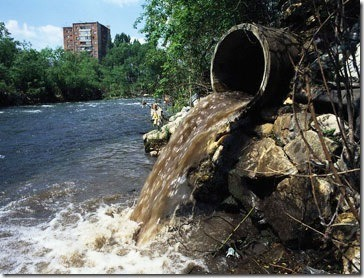
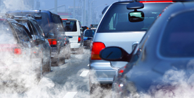
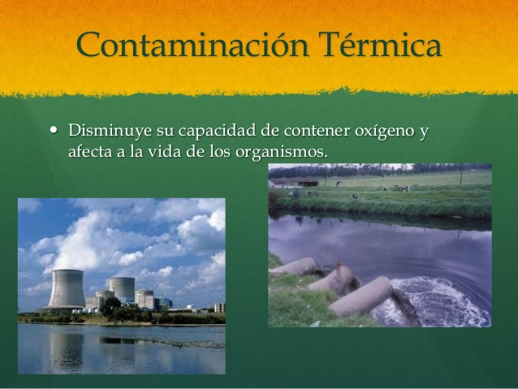
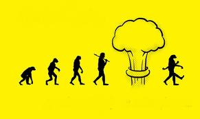

Tipos de Contaminacion
Tipos de Contaminación
Diferentes tipos de contaminación están clasificados por su parte que afectan o resultan por las causas de contaminación particulares. Cada uno de estos tipos tiene sus propias causas y consecuencias distintivas. El estudio de la contaminación ambiental ayuda a entender los conceptos básicos con mayor detalle y producir protocolos para los tipos específicos. En consecuencia, los principales tipos de contaminación son:
- Contaminación del Agua
- Contaminación del Aire
- Contaminación del Suelo
- Contaminación Térmica
- La Contaminación radiactiva
Contaminacion del Agua
Como su nombre lo sugiere, “Contaminación del agua” es el tipo de contaminación que supone la contaminación distintos cuerpos de agua. Varias criaturas acuáticas dependen de estos cuerpos de agua y sus características naturales nutritivos para apoyar su vida.
Contaminación del Agua

Contaminacion del Aire
La contaminación del aire se produce cuando ciertos gases tóxicos entran en contacto con las partículas de la atmósfera, perjudicando de forma seria y dañina a la salud del hombre, de animales y plantas.

Contaminacion del Suelo
La contaminación del suelo es la introducción de sustancias extrañas a la superficie terrestre. Estos elementos perjudican de forma grave la salud de las personas, de animales y plantas. Muchas veces este tipo de contaminación entra en contacto con el agua potable de estos sitios agravando la situación.
Sobre el suelo realizamos actividades para el crecimiento y mantenimiento de muchas familias como la agricultura, la industria o la construcción de ciudades. El hecho que se altere la calidad de la tierra y como consecuencia se produzca una grave crisis alimentaria, repercute en la forma de vida y en el futuro de las generaciones venideras, porque ellas no tendrán un lugar donde plantar sus alimentos ni construir una casa donde vivir
Contaminacion Termica
La contaminación térmica es el deterioro de la calidad del aire o del agua a causa del incremento o descenso de la temperatura. Las causas de este tipo de contaminación están muy bien identificadas y estudiadas, pero las consecuencias a la que nos enfrentamos son difíciles de revertir sin la acción drástica de gobiernos, empresas y ciudadanos.

Contaminacion Radiactiva
La contaminación radiactiva se designa a la causada por la diseminación de material radiactivo en el medioambiente. Dos de los contaminantes más perjudiciales para el bienestar de los seres vivos son el uranio enriquecido y el plutonio.
El uranio enriquecido se origina en instalaciones médicas y de investigación, en reactores nucleares, en la munición blindada, en submarinos y en satélites artificiales. La exposición a este tóxico provoca enfermedades en el riñón, en el cerebro o en el hígado.
Mientras que el plutonio es una sustancia muy tóxica para el hombre y el medioambiente porque permanece contaminándolo decenas de miles de años.

Dato interesante
Aunque los niños sólo representan el 10% de la población mundial, más del 40% de las enfermedades recae sobre ellos, y más de 3 millones de niños menores de cinco años mueren anualmente por factores ambientales.
El reciclaje previno que 85 millones de toneladas de materiales fueran eliminados en el 2010, frente a los 18 millones de toneladas en 1980